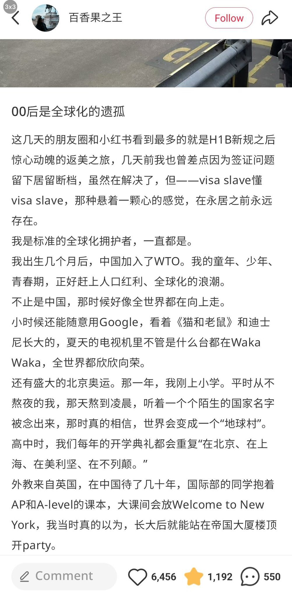
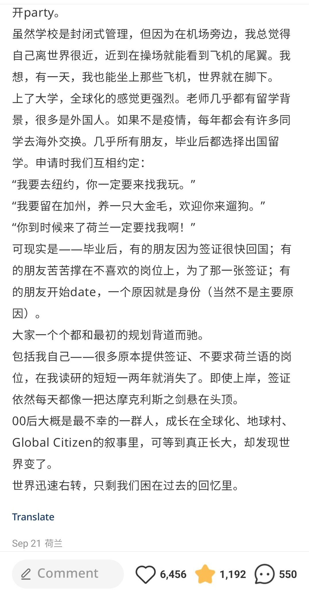

新闻里北京街头又插上了中美两国的国旗，我不想谈论太多政治，但就像这篇小红书的内容一样，我曾经真的以为全球化会在我的有生之年实现。
我和我的同学从小接受这样的叙事，我们被教导爱国，但也教我们尊重别国的文化，我们在春节时会贴春联放鞭炮，也会在圣诞节互送贺卡和礼物，人与人之间没有那么多隔阂和仇恨，毕竟，Christmas eve和除夕夜没什么区别，人们想要的只是一个温暖且团聚的夜晚，那时的人们真的相信明天会更好。
可是明天真的会更好么？
世界在我没有反应过来的时候加速右转，宛若切香肠一样，在我不经意间一点一点蚕食我的幻想，大家不再提倡开放包容，人们开始消极，开始封闭，更多且让我失落的是，我感受到人们的麻木，人们不愿意乐观，哪怕连保持理想主义这件事都不愿意尝试了。
现在的我被卡在中间，进退两难，当我透过玫瑰色的滤镜回头看时，我觉得过去比现在更近未来。
我和我的同学从小接受这样的叙事，我们被教导爱国，但也教我们尊重别国的文化，我们在春节时会贴春联放鞭炮，也会在圣诞节互送贺卡和礼物，人与人之间没有那么多隔阂和仇恨，毕竟，Christmas eve和除夕夜没什么区别，人们想要的只是一个温暖且团聚的夜晚，那时的人们真的相信明天会更好。
可是明天真的会更好么？
世界在我没有反应过来的时候加速右转，宛若切香肠一样，在我不经意间一点一点蚕食我的幻想，大家不再提倡开放包容，人们开始消极，开始封闭，更多且让我失落的是，我感受到人们的麻木，人们不愿意乐观，哪怕连保持理想主义这件事都不愿意尝试了。
现在的我被卡在中间，进退两难，当我透过玫瑰色的滤镜回头看时，我觉得过去比现在更近未来。

